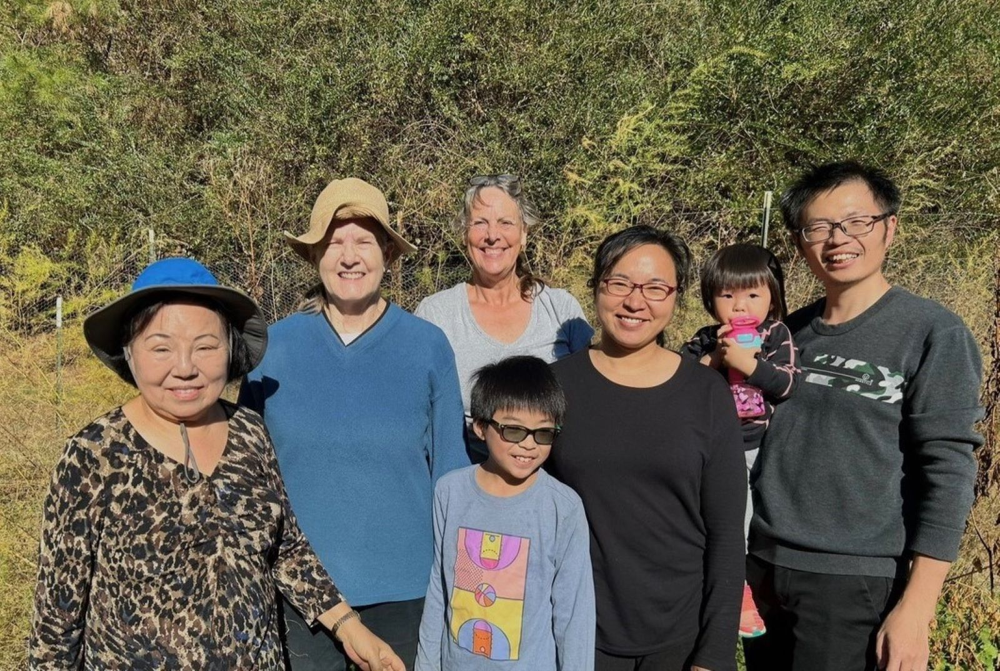

OUR STORY

Our Team.
CompostMates is 100% student run. We have an 9 person executive team, with roles including:
CompostMates has a unique origin story in that it began as a result of two separate teams working on the same idea. In July 2020, Caroline Shubel enlisted her friend, Olivia Tseng, to work on an idea for a food scrap pick up service for off-campus students.
Just a couple months later, Lydia Rowen, along with Ideliya Khismatova, Daniel Sheyko, and Jason Yang, came together within the Environmental Affairs Committee (EAC) of UNC student government to work on the same project idea. The two teams worked separately to prepare for a launch in the Spring.
It was not until December 2020 that Caroline and Olivia learned of the EAC team when they launched their Instagram page. After an introductory Zoom call, the two teams decided to combine, and the rest is history!

Our Partners.

Giving Garden
Giving Garden is a community garden maintained by members of the University United Methodist Church. They donate half of their produce to TABLE, which is a non-profit organization that provides hunger relief and nutrition education services to children living in Orange County, NC.
Address: 531 Umstead Drive, Chapel Hill NC 27516.
Carolina Community Garden (CCG)
Carolina Community Garden is an engagement program of the North Carolina Botanical Garden and within walking distance of the UNC Chapel Hill campus. All of the sustainably produce grown at the CCG is donated to UNC’s housekeepers.
Address: 212 Wilson Street in Chapel Hill
Edible Campus
Edible Campus is a program at the North Carolina Botanical Garden that grows vegetables, fruit, herbs, and pollinator friendly plants on the campus of UNC Chapel Hill. All the food from their 1/4 acre main garden is donated to Carolina Cupboard, the on campus food pantry for students. Food in their 8 satellite gardens, located throughout campus, is free for anyone in the community to forage on.
Edible Campus seeks to educate students on issues around food, environmental sustainability, and alternative landscape use. If you’d like to get involved, they have volunteer workdays on Mondays from 3pm-5pm and occasional Thursday workdays at the same time.